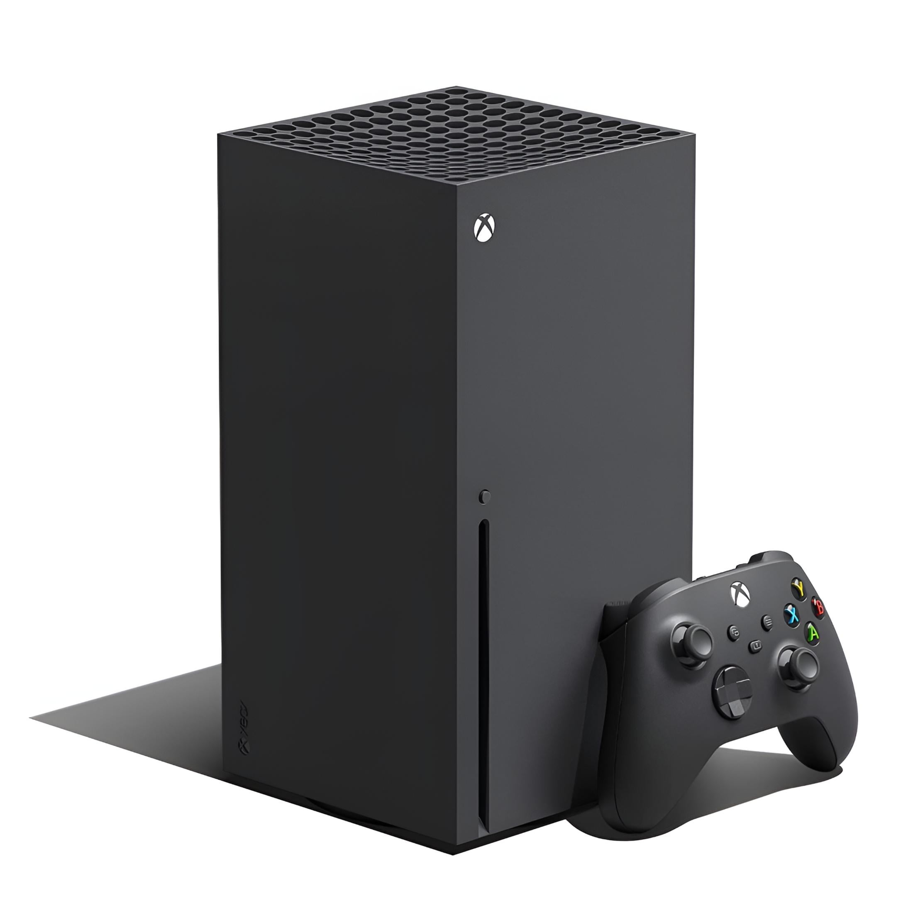

Xbox Wireless Controller
A refined version of the previous controller with improved ergonomics and better connectivity.
| Console | Image | Release Year | CPU | Storage | Backward Compatibility | Notable Features |
|---|---|---|---|---|---|---|
| Xbox |  |
2001 | 733MHz Intel Pentium III | 8GB HDD | No | First Microsoft gaming console |
| Xbox 360 | 2005 | 3.2GHz PowerPC Tri-Core Xenon | 20GB-250GB HDD | Limited (Original Xbox) | Online multiplayer with Xbox Live | |
| Xbox One | 2013 | 1.75GHz AMD 8-core Jaguar | 500GB-2TB HDD | Yes (360 & Original Xbox) | Integrated Kinect, media hub | |
| Xbox Series X |  | 2020 | 3.8GHz AMD Zen 2 | 1TB SSD | Yes (Xbox One, 360, Original) | 4K gaming, fast SSD loading |
| Xbox Series S |  |
2020 | 3.6GHz AMD Zen 2 | 512GB-1TB SSD | Yes (Xbox One, 360, Original) | Budget-friendly, digital-only |

A refined version of the previous controller with improved ergonomics and better connectivity.

A premium controller with customizable features for serious gamers.

Designed for gamers with limited mobility, this controller features large programmable buttons and connects to external devices like switches, buttons, mounts, and joysticks to create a custom controller experience.

Delivers high-quality audio and chat with auto-mute and voice isolation. It supports spatial sound technologies like Windows Sonic, Dolby Atmos, and DTS Headphone:X.